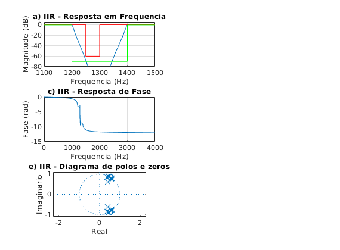
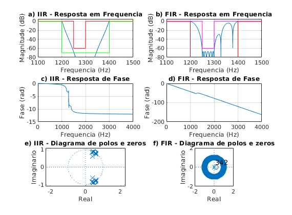

Contents
% Projeto filtro 4 IIR - Chebyshev 1 % BS - (fa = 8000 Hz, f1 = 1200 Hz; f2 = 1250 Hz, f3 = 1300 Hz; % f4 = 1400 Hz, Ap = 0.5 dB, As = 60 dB, GdB = 0 dB) close all; clear all; clc; ExecutarAjuste = 0;
Especificacoes
Ap = 0.5; As = 60; GdB = 0; fa_espec = 8000; wa_espec = 2*pi*fa_espec; fp1_espec = 1200; fp2_espec = 1400; fs1_espec = 1250; fs2_espec = 1300; wp1_espec = 2*pi*fp1_espec; wp2_espec = 2*pi*fp2_espec; ws1_espec = 2*pi*fs1_espec; ws2_espec = 2*pi*fs2_espec; tetha_p1_espec = wp1_espec/(wa_espec/2); tetha_p2_espec = wp2_espec/(wa_espec/2); tetha_s1_espec = ws1_espec/(wa_espec/2); tetha_s2_espec = ws2_espec/(wa_espec/2); lambda_p1_espec = 2*tan(tetha_p1_espec * pi/2); lambda_p2_espec = 2*tan(tetha_p2_espec * pi/2); lambda_s1_espec = 2*tan(tetha_s1_espec * pi/2); lambda_s2_espec = 2*tan(tetha_s2_espec * pi/2); lambda_0 = sqrt(lambda_p2_espec*lambda_p1_espec); Bwp = lambda_p2_espec - lambda_p1_espec; Os1 = abs((Bwp*lambda_s1_espec)/((lambda_0^2) - (lambda_s1_espec^2))); Os2 = abs((Bwp*lambda_s2_espec)/((lambda_0^2) - (lambda_s2_espec^2))); Os_espec = min(Os1, Os2); Op_espec = 1; Os = Os_espec; Op = Op_espec; fa = fa_espec; % Ajustes delta_fp1 = 0; delta_fp2 = 0; delta_fs1 = 0; delta_fs2 = 0; if ExecutarAjuste delta_fp2 = 0; end
Chebyshev I
n = cheb1ord(Op, Os, Ap, As,'s'); [b, a] = cheby1(n,Ap, Op, 's');
Transformacao de frequencia
LP para BP
syms p; Np(p) = poly2sym(b, p); Dp(p) = poly2sym(a, p); Hp(p) = Np(p) / Dp(p); pretty(vpa(collect(Hp(p)), 5)) % Normalizando de acordo com p^n syms s; eq = (Bwp*s)/((s^2) + (lambda_0^2)); Hs(s) = collect(subs(Hp(p), eq)); pretty(vpa(Hs(s), 3)) [N, D] = numden(Hs(s)); bs = sym2poly(N); as = sym2poly(D); an = as(1); bsn = bs/an; asn = as/an; Hsn(s) = poly2sym(bsn, s)/poly2sym(asn, s); pretty(vpa(Hsn(s), 5))
15 16 7 16 6 17 5
(3.2232 10 )/(7.2058 10 p + 8.2954 10 p + 1.7385 10 p
17 4 17 3 16 2 16
+ 1.3471 10 p + 1.1874 10 p + 5.445 10 p + 2.0325 10 p
15
+ 3.2232 10 )
120 12 120 10 120 8 120 6
(#1 + 1.01 10 s + 3.78 10 s + 7.88 10 s + 9.84 10 s
120 4 120 2 119
+ 7.37 10 s + 3.07 10 s + 5.48 10 )/(#1
119 13 120 12 120 11 120 10
+ 1.5 10 s + 1.09 10 s + 1.16 10 s + 4.31 10 s
120 9 120 8 120 7 121 6
+ 3.71 10 s + 9.21 10 s + 6.22 10 s + 1.15 10 s
120 5 120 4 120 3 120 2
+ 5.79 10 s + 8.4 10 s + 2.83 10 s + 3.32 10 s
119 119
+ 5.71 10 s + 5.48 10 )
where
119 14
#1 == 1.16 10 s
14 12 10 8 6 4
(s + 8.7427 s + 32.757 s + 68.187 s + 85.163 s + 63.818 s
2 14 13 12 11
+ 26.569 s + 4.7404)/(s + 1.3025 s + 9.4634 s + 10.085 s
10 9 8 7 6 5
+ 37.334 s + 32.118 s + 79.717 s + 53.84 s + 99.562 s + 50.101 s
4 3 2
+ 72.735 s + 24.54 s + 28.759 s + 4.9437 s + 4.7404)
Transformando em Z (bilinear)
syms z;
aux = 2*((z-1)/(z+1));
Hz(z) = collect(subs(Hs(s), aux));
pretty(vpa(Hz(z),3))
[Nz,Dz] = numden(Hz(z));
bz = sym2poly(Nz);
az = sym2poly(Dz);
an = az(1);
bzn = bz/an;
azn = az/an;
Hzn(z) = poly2sym(bzn,z) / poly2sym(azn,z);
pretty(vpa(Hzn(z),5))
122 14 123 13 123 12 124 11
(1.98 10 z - 1.45 10 z + 5.96 10 z - 1.67 10 z
124 10 124 9 124 8 124 7
+ 3.54 10 z - 5.9 10 z + 7.96 10 z - 8.78 10 z
124 6 124 5 124 4 124 3
+ 7.96 10 z - 5.9 10 z + 3.54 10 z - 1.67 10 z
123 2 123 122 122 14
+ 5.96 10 z - 1.45 10 z + 1.98 10 )/(3.21 10 z
123 13 123 12 124 11 124 10
- 2.2 10 z + 8.39 10 z - 2.19 10 z + 4.33 10 z
124 9 124 8 124 7 124 6
- 6.72 10 z + 8.45 10 z - 8.68 10 z + 7.34 10 z
124 5 124 4 124 3 123 2
- 5.06 10 z + 2.83 10 z - 1.24 10 z + 4.11 10 z
122 122
- 9.3 10 z + 1.17 10 )
14 13 12 11 10 9
(0.61703 z - 4.5275 z + 18.557 z - 52.039 z + 110.22 z - 183.81 z
8 7 6 5 4 3
+ 247.92 z - 273.45 z + 247.92 z - 183.81 z + 110.22 z - 52.039 z
2 14 13 12
+ 18.557 z - 4.5275 z + 0.61703)/(z - 6.8417 z + 26.125 z
11 10 9 8 7 6
- 68.263 z + 134.72 z - 209.37 z + 263.16 z - 270.46 z + 228.44 z
5 4 3 2
- 157.72 z + 88.021 z - 38.646 z + 12.8 z - 2.8964 z + 0.36518)
Inicio PLOT (filtro IIR)
figure(1) subplot(321) escala = fa/2; [hz, wz] = freqz(bzn, azn, linspace(0, pi, 100000)); plot(wz/pi*escala, 20*log10(abs(hz))); xlim([1100 1500]);ylim([-80 5]); title('a) IIR - Resposta em Frequencia') grid on hold on plot([0,fs1_espec,fs1_espec,fs2_espec, fs2_espec,2000],[0,0,-As,-As,0,0], 'r') plot([0,fp1_espec,fp1_espec,fp2_espec, fp2_espec,2000],-[Ap,Ap,As+10,As+10,Ap,Ap], 'g') xlabel('Frequencia (Hz)'); ylabel('Magnitude (dB)'); subplot(323) plot(wz/pi*escala, unwrap(angle(hz))/pi); grid on; title('c) IIR - Resposta de Fase') xlabel('Frequencia (Hz)'); ylabel('Fase (rad)'); subplot(325) zplane(bzn, azn); title('e) IIR - Diagrama de polos e zeros') xlabel('Real'); ylabel('Imaginario');
Calculos filtro FIR
% Projeto filtro 4 FIR PM % BP - (fa = 8000 Hz, f1 = 1200 Hz; f2 = 1250 Hz, f3 = 1300 Hz; % f4 = 1400 Hz, Ap = 0.5 dB, As = 60 dB, GdB = 0 dB) clear all; ExecutarAjuste = 1;
Especificacoes
Ap = 0.5; As = 60; GdB = 0; fa = 8000; fp1 = 1200; fp2 = 1400; fs1 = 1250; fs2 = 1300; fcuts = [fp1 fs1 fs2 fp2]; w = fcuts/fa*(2*pi); wp1 = w(1)/pi; ws1 = w(2)/pi; ws2 = w(3)/pi; wp2 = w(4)/pi; mags = [1 0 1]; devs_As = 10^(-As/20); devs_Ap = 1-10^(-Ap/20); devs = [devs_Ap devs_As devs_Ap]; G0 = GdB; if ExecutarAjuste G0 = G0 - 0.23; end % calculo da ordem com firpmord [n,f0,a0,w0] = firpmord(fcuts,mags,devs,fa); % calculo algoritmo PM h_pm = firpm(n,f0,a0,w0); h_pm = h_pm*10^(G0/20);
subplot(322) escala = fa/2; [h, w] = freqz(h_pm, 1, linspace(0,pi,100000)); % plot(w/pi, abs(h)); grid on; plot(w*fa/2/pi,20*log10(abs(h))); grid on; title('b) FIR - Resposta em Frequencia') xlim([1000 1500]); ylim([-80 5]); grid on; hold on; Amin = 80; plot([0, ws1, ws1, ws2, ws2, 1]*fa/2, [0, 0, -As, -As, 0,0], '-m') plot([0, wp1, wp1, wp2, wp2, 1]*fa/2, [-Ap, -Ap, -120, -120, -Ap, -Ap], '-r') xlim([1100 1500]) xlabel('Frequencia (Hz)'); ylabel('Magnitude (dB)'); subplot(324) plot(w/pi*escala, unwrap(angle(h))/pi); grid on; title('d) FIR - Resposta de Fase') xlabel('Frequencia (Hz)'); ylabel('Fase (rad)'); subplot(326) zplane(h_pm, 1); axis([-2 2 -2 2]) title('f) FIR - Diagrama de polos e zeros') xlabel('Real'); ylabel('Imaginario');